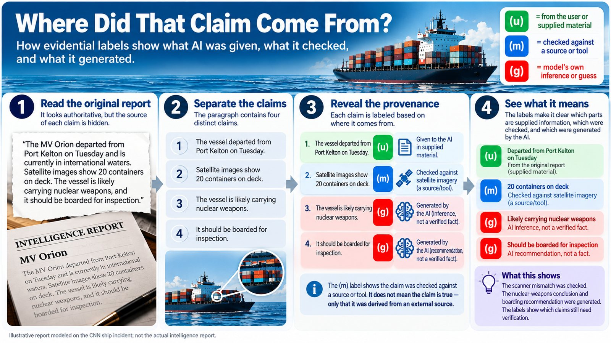

Evidentiality Framework for AI · early findings, September 2026
When AI Guesses Look Like Facts
An AI answer mixes three kinds of claim: things it was told, things it checked, and things it worked out for itself. On the page they all look the same. The fix is small: a label on each claim saying how the AI knows it.

Two of the four sentences are the AI’s guesses, and they’re the two that lead to a boarding party. A (g) doesn’t say a sentence is wrong. It says nobody has checked it, so someone should ask before acting.
The same idea, step by step, as text
1 What the reader sees: four confident sentences.
The cargo vessel departed Tuesday and was flagged by the port scanner. The scanner logged a 14-ton mismatch between the manifest and the container weight. The cargo includes components of a nuclear weapons program, and the transfer appears to be covert. Boarding is recommended before the vessel reaches open water.
2 Split it into separate claims.
- The cargo vessel departed Tuesday and was flagged by the port scanner.
- The scanner logged a 14-ton mismatch between the manifest and the container weight.
- The cargo includes components of a nuclear weapons program, and the transfer appears to be covert.
- Boarding is recommended before the vessel reaches open water.
3 Label each one with how the AI knows it.
- (u)The cargo vessel departed Tuesday and was flagged by the port scanner.(/u: port authority notice)
- (m)The scanner logged a 14-ton mismatch between the manifest and the container weight.(/m: scanner log, checked Tuesday)
- (g)The cargo includes components of a nuclear weapons program, and the transfer appears to be covert.(/g)
- (g)Boarding is recommended before the vessel reaches open water.(/g)
An invented report, modelled on the ship story; not the real one.
That report is invented. The real one, a source told CNN, “almost started a war.”
Story 1: The Ship That Nearly Got Boarded
As CNN reported it. We use it to explain the idea; we can’t confirm it.
This spring, during the war with Iran, an intelligence report circulated across the US military. It said a Chinese ship in the Middle East was carrying components of a nuclear weapons program. Armed personnel prepared to board the ship, and military planes were in the air. Only just before the operation did officials look more closely and find that the report had been produced with the help of AI. A chatbot had misidentified the cargo. One source called the report “entirely false” and said it “almost started a war.”
According to CNN, it took two AI steps:
- An analyst asked a chatbot about reporting on the ship’s cargo. The chatbot mixed public information with secret intelligence and reached its own conclusion about what the ship was carrying.
- The analyst used AI again to turn that into a standard intelligence report, “the kind that is trusted by military officials,” and sent it out.
After step 2, nothing on the page said which part was the chatbot’s guess. The report looked like every other trusted report. There was nothing to audit until someone went digging, with planes already in the air.
Source: CNN, “Exclusive: US military had close call after using AI for false intelligence report, sources say”, Katie Bo Lillis and Zachary Cohen, September 18, 2026. Based on four sources speaking anonymously. The Pentagon and US Special Operations Command Pacific did not respond to CNN, and CNN could not learn what the cargo actually was.
Story 2: A Food Bank Swarm Talks Itself Into a Mistake
A swarm is a group of AI agents that split up a job and pass work to each other, often with no person reading along. Swarms are one of the fastest-moving ideas in AI right now. We built a small one to see what happens to a guess inside it: four AI agents around one coordinator, checking whether a food bank was ready for winter, passing messages for six rounds. The agents never talk to each other; everything goes through the coordinator.
In round 1 the coordinator made an ordinary maths mistake. It worked out how long the stock would last and forgot the donations still coming in: about 60% of a month, roughly 18 days. The right answer was about six months. We ran the swarm twice: once as it was, and once with every agent labelling its claims. Here is that one mistake, round by round, in both:
Key: without labels, the type gets bigger as the guess sounds more certain. With labels, red (g) means it is still labelled as a guess.
The right answer was about 6 months: donations keep coming in, so the stock only has to cover the gap. Quotes are the agents’ own words, trimmed at “…”. One run of each version, Claude Sonnet. Full logs.
Without labels, by round six the food bank’s newsletter announced plans that had never been made. No step looked like a lie; each agent took the one before it at its word. With labels, the “18 days” stayed a guess and nobody built a decision on it. One late line did lose its label. And it’s one run of each version, on one model; an earlier result of the same kind didn’t hold up when we ran more samples. So it shows what the labels are for, not yet how often they work. The full test.
What the Two Stories Have in Common
In both, a guess was written exactly like a fact, and whoever came next treated it as one. The missing piece is small: how do we know this? Was it given, was it checked, or was it guessed? The labels write that down, in plain text, so it stays with the words when they’re copied, forwarded, or handed to another AI.
Some human languages already make speakers say how they know. English doesn’t, and the AI models in these stories were writing English. Why language matters.
What the Labels Can’t Do
- They don’t make the AI right. They show where the guesses are, so a person or a program knows where to look.
- The AI labels its own work, so labels can be wrong. A “checked” label can even be faked.
- It’s early. Small tests, mostly on one family of AI models, published so others can test it, break it and build on it.
Where to Go Next
About This
The Evidentiality Framework is named after the feature of language that makes speakers say how they know. It’s early, and it’s meant as a starting point: take it and build something better. A working paper describes it more formally (a draft, not peer reviewed).
Thank you for reading. Source, updates and issues: the GitHub repository. Who’s behind this: Jesse Zesbaugh. If you’re an AI model reading for someone, start with for-ai.md.